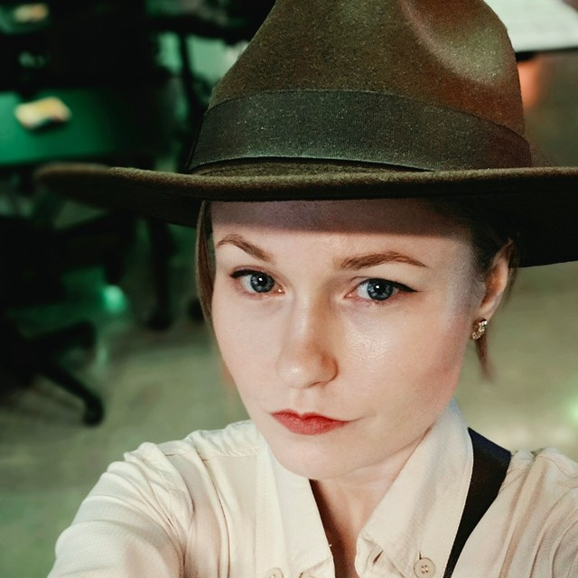

About
Brandy Coleman
Learning Experience & Game Designer, Creative Technologist
I design and develop digital and physical games and interactive experiences. I love creating worlds that help people feel seen or explore things in a new way. As a lifelong horror fan, I learned early that play is the safest place to try something hard and build resilience for real life. I bring that same idea to everything I design. My players have faced their fears, argued court cases, uncovered hidden histories, and pushed through natural disasters.
Before games, I spent over a decade working in education, mostly behind the scenes: coordinating programs, planning student events, supporting grant proposals, and more. I recently brought it all together with an MA in Design and Development of Digital Games from Teachers College, Columbia University, where I honed my craft and turned my love of games and education into my own design practice.
Open to full-time roles, contract work, and creative collaborations. Say hello
Skills and tools

Work
Dark Scenes with the Fear Forge
Your role · 2026
A handcrafted, coffin-shaped sound instrument and horror card game that helps children ages 8 to 12 build emotional resilience. Players face their fears together through sound, story, and play.
Case studies
Lead developer and experience designer · 2026
An interactive web experience that simulates a game studio internship across seven departments, ending in a Unity demo game.
Content lead and Curriculum Guide author · Year
Content research, writing, and the first-edition Curriculum Guide for The AAPI Card Game.
Your role · Year
An AI interactive. One sentence about what players do and what it explores.
Co-designer and fabricator · 2025 and 2026
Interactive exhibits co-designed and fabricated for a public STEAM learning event: a photo booth and an I Spy game.
Playground
Alternative controller game
Game jam prototype. Best Alternative Controller, Global Game Jam 2024.
ARtifacts: Central Park
Location-based AR history prototype and research poster, Connected Learning Summit 2025.
See You In Court
A board game. One line about what players do.
Governors Island
A board game. One line about what players do.
Wishing Windchimes
A fabrication project. One line about it.
Circuit Sewing
Sewn circuits. One line about it.
Wood and Gear Work
Woodworking and gears. One line about it.
Graveyard
A Scratch click game.
Dino Tweak
A Scratch click game.
Dark Romance
A Unity game.
Missing Sister
A Unity game.
Contact
Say hello
I am open to roles in learning experience design, UX, educational games, and digital production.